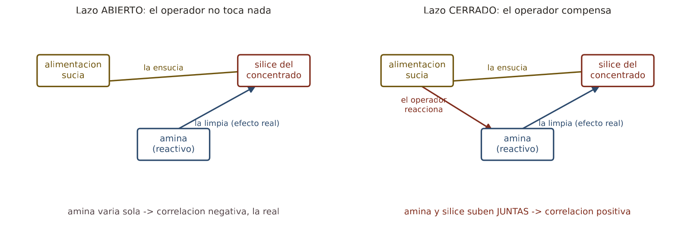
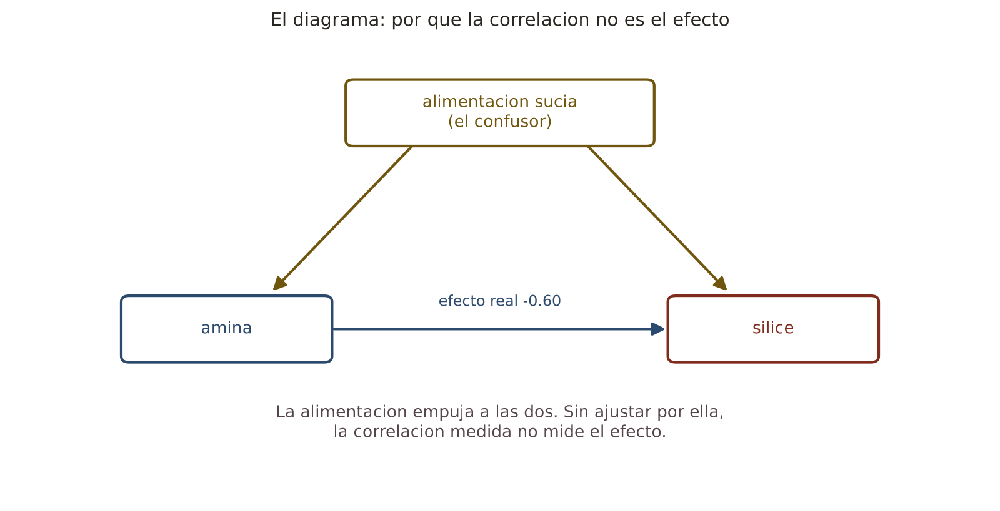
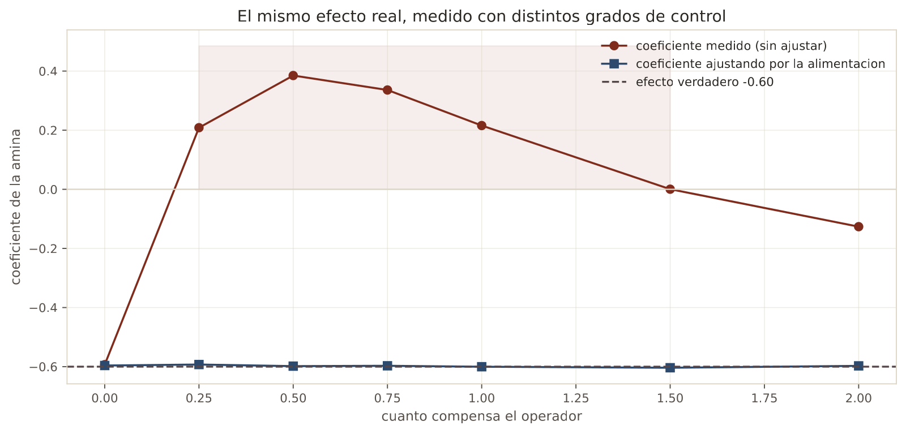
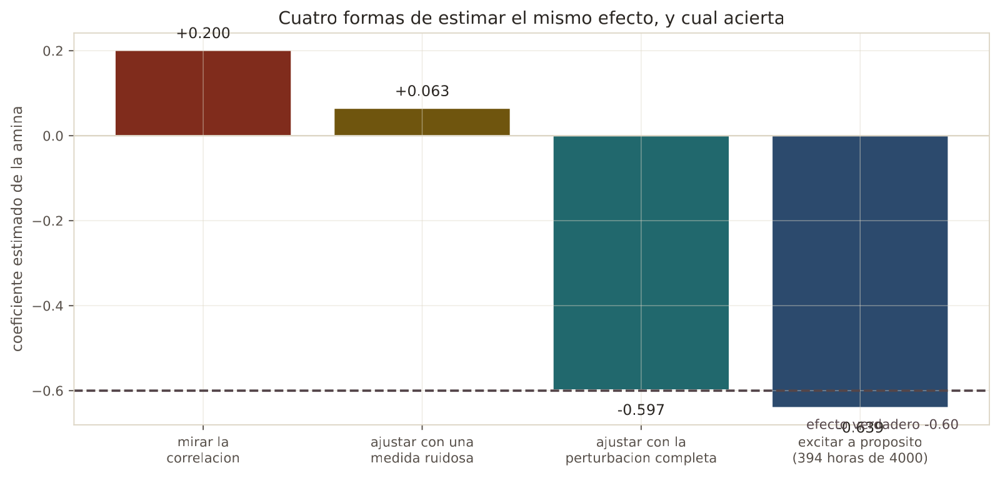

En 30 segundos
- +0,16. La correlación de la amina con la sílice, cuando la química predice el signo contrario. Esa contradicción es la clave de todo el proyecto.
- Simulada, la trampa se ve. Con efecto real fijado en −0,60, una compensación parcial del operador la mide como +0,41.
- Ajustar por la perturbación lo arregla, y devuelve −0,600 exacto. Pero hace falta medirla bien.
- Con una medida ruidosa no basta: el coeficiente se queda en +0,080, todavía con el signo cambiado.
- Lo único que funciona es excitar a propósito. Con 403 horas de dosificación aleatoria sale −0,654.
Qué resuelve este módulo
Trece módulos midiendo que no se puede predecir. Este explica por qué, y la explicación no es de machine learning.
La planta opera en lazo cerrado. Cuando un control hace bien su trabajo, mueve las variables manipuladas para cancelar las perturbaciones, y al hacerlo borra justo la variación de la que un modelo aprendería.
El síntoma estaba en el módulo 1, a la vista de todos, y nadie lo trató como lo que era: una correlación con el signo cambiado.
Antes de la teoría: un ejemplo de juguete
Una planta donde conocemos la verdad porque la fijamos nosotros.
la alimentacion sucia SUBE la silice +1,0 por unidad
la amina BAJA la silice −0,6 por unidad <- el efecto realCuatro horas, dos escenarios. En el primero el operador no toca nada. En el segundo dosifica más amina cuando entra alimentación sucia.
Paso 1. Sin operador
| Hora | Alimentación | Amina | Sílice = 1,0·alim − 0,6·amina |
|---|---|---|---|
| 1 | 0 | 2 | 0 − 1,2 = −1,2 |
| 2 | 0 | 4 | 0 − 2,4 = −2,4 |
| 3 | 0 | 6 | 0 − 3,6 = −3,6 |
| 4 | 0 | 8 | 0 − 4,8 = −4,8 |
Más amina, menos sílice. La relación se ve directa, y su pendiente es el efecto real.
pendiente = (−4,8 − (−1,2)) / (8 − 2) = −3,6 / 6 = −0,6Paso 2. Con operador, compensando en parte
Ahora la alimentación varía, y el operador añade una unidad de amina por cada unidad de suciedad.
| Hora | Alimentación | Amina | Sílice = 1,0·alim − 0,6·amina |
|---|---|---|---|
| 1 | 2 | 2 | 2 − 1,2 = 0,8 |
| 2 | 4 | 4 | 4 − 2,4 = 1,6 |
| 3 | 6 | 6 | 6 − 3,6 = 2,4 |
| 4 | 8 | 8 | 8 − 4,8 = 3,2 |
Paso 3. Medir la pendiente ahora
pendiente = (3,2 − 0,8) / (8 − 2) = 2,4 / 6 = +0,4+0,4. El efecto real sigue siendo −0,6 y no ha cambiado ni un poco. Lo que ha cambiado es lo que se mide.
Y la explicación es simple: el operador solo compensa el 60 % del problema. Cada unidad de suciedad sube la sílice en 1,0, y la amina añadida la baja en 0,6. Queda un residuo de +0,4 que sube con la dosificación.
Paso 4. La cura, y su precio
Si se conoce la alimentación, se puede preguntar qué pasa con la sílice a igualdad de alimentación. En las cuatro horas del paso 2 no hay dos con la misma alimentación, así que no se puede. Hace falta que la alimentación esté medida y que varíe de forma independiente.
Cuando eso se cumple, el efecto se recupera exacto. Cuando la medida es mala, no.
Paso 5. Qué acaba de pasar
Un dato correcto, un cálculo correcto, y una conclusión invertida. Nadie se equivocó al medir.
La correlación contesta a "qué pasa cuando la amina es alta". La pregunta útil es otra: "qué pasaría si yo subiera la amina". Son distintas siempre que haya algo que empuje a las dos, y en una planta controlada ese algo es la razón de existir del control.
Glosario
10 términos, en palabras simples
- Lazo abierto. El operador o el control no reaccionan. Las variables manipuladas varían por su cuenta.
- Lazo cerrado. El control mueve las variables manipuladas en respuesta a lo que mide.
- Perturbación. Lo que entra sin que nadie lo decida. Aquí, la ley de la alimentación.
- Variable manipulada. La que el operador mueve. Aquí, la amina.
- Confusor. Algo que causa a la vez la supuesta causa y el supuesto efecto. En inglés, confounder.
- Ajustar por una variable. Comparar solo casos con el mismo valor de esa variable. En inglés se llama condicionar.
- Observacional. Mirar lo que pasó sin intervenir.
- Intervencional. Mover algo a propósito y ver qué ocurre.
- Excitación. Mover una variable de forma deliberada e independiente, para poder medir su efecto. En control se llama señal de prueba.
- Identificabilidad. Si el efecto se puede recuperar de los datos disponibles. A veces la respuesta es que no.
Paso a paso
Paso 1. Comparar el signo medido con el signo esperado
La química de la flotación inversa dice que más colector arrastra más ganga, así que más amina debería significar menos sílice. Si el dato dice lo contrario, hay algo estructural.
Paso 2. Simular una planta cuya verdad se conoce
En los datos reales no se sabe el efecto verdadero, así que no se puede comprobar nada. En una simulación sí: lo fijamos nosotros y vemos qué mide cada método.
Paso 3. Barrer el grado de compensación
Desde un operador que no toca nada hasta uno que sobrecompensa. La trampa aparece en el medio.
Paso 4. Probar la cura
Ajustar por la perturbación. Después repetir con la perturbación mal medida, que es la situación real de este proyecto.
Paso 5. Probar lo que sí funciona
Excitación deliberada: mover la amina al azar durante algunas horas, independientemente de la sílice.
El código, por partes
Paso 1. La planta simulada, en tres líneas
feed = RNG.normal(0, 1, HOURS)
amina = response * feed + RNG.normal(0, 0.5, HOURS)
silica = 1.00 * feed + (-0.60) * amina + RNG.normal(0, 0.3, HOURS)línea por línea, 3 entradas
RNG.normal(0, 1, HOURS)- Números al azar de una campana de media cero y desviación uno. Es la perturbación.
response * feed- La regla del operador: cuánta amina añade por cada unidad de suciedad. Con cero no reacciona.
(-0.60) * amina- El efecto verdadero, fijado por nosotros. Nada de lo que midamos después lo cambia.
1. LO QUE MIDEN LOS DATOS REALES
correlacion amina con silica: +0.171
la quimica predice el signo: negativo (mas colector, menos silice)
el dato dice: positivo -> contradiccionEn datos horarios la correlación es +0,171, y sobre el archivo completo a 20 segundos era +0,16. Las dos son positivas, y las dos contradicen a la química.

Paso 2. Medir el coeficiente con y sin ajustar
def regress(frame, columns):
design = np.column_stack([np.ones(len(frame))] + [frame[c] for c in columns])
coefficients, *_ = np.linalg.lstsq(design, frame["silica"], rcond=None)
return dict(zip(["intercepto"] + columns, coefficients))línea por línea, 4 entradas
np.column_stack([...])- Pega columnas una al lado de otra para formar la matriz de diseño.
np.ones(len(frame))- Una columna de unos. Es lo que produce el término independiente de la recta.
np.linalg.lstsq- Resuelve mínimos cuadrados. Es la regresión lineal del módulo 3, escrita a mano.
rcond=None- Le pide el comportamiento moderno para decidir qué valores singulares descarta.
2. LA MISMA PLANTA, SIMULADA CON EL LAZO ABIERTO Y CERRADO
efecto verdadero de la amina, fijado por nosotros: -0.60
respuesta del operador corr(amina, silice) coef. simple coef. con feed
abierto (sin operador) -0.277 -0.593 -0.596
respuesta debil (0,5) 0.350 0.406 -0.593
respuesta parcial (1,0) 0.370 0.193 -0.598
sobrecompensa (2,0) -0.576 -0.128 -0.597
Paso 3. Cuando la perturbación está mal medida
ruidosa = frame.copy()
ruidosa["feed"] = frame["feed"] + RNG.normal(0, 1.0, HOURS)
print(regress(ruidosa, ["amina", "feed"])["amina"])línea por línea, 2 entradas
frame.copy()- Una copia independiente. Sin ella, modificar la columna cambiaría también el original.
+ RNG.normal(0, 1.0, ...)- Le suma ruido a la medida de la perturbación, tanto como la propia señal. Es el caso realista.
3. QUE PASA SI LA PERTURBACION NO SE REGISTRA
efecto verdadero -0.600
sin ajustar por la perturbacion +0.216
ajustando con la perturbacion completa -0.600
ajustando con una medida ruidosa +0.080Paso 4. Excitar a propósito
mask = RNG.random(HOURS) < 0.10
excited.loc[mask, "amina"] = RNG.normal(0, 1.5, int(mask.sum()))
print(regress(excited[mask], ["amina"])["amina"])línea por línea, 3 entradas
RNG.random(HOURS) < 0.10- Marca al azar una hora de cada diez. Es la fracción del tiempo dedicada a la prueba.
excited.loc[mask, "amina"] = ...- En esas horas la dosificación se elige al azar, sin mirar la sílice. Eso rompe el lazo.
regress(excited[mask], ...)- Se estima usando SOLO esas horas. Son pocas, y son las únicas que informan.
4. LO QUE SI FUNCIONARIA
usando solo las horas excitadas (403 de 4000): -0.654
efecto verdadero -0.600El resultado, medido
Qué esperábamos. Que el control atenuara la correlación, dejándola cerca de cero.
Qué salió. No la atenúa: le cambia el signo.
| Respuesta del operador | Correlación medida | Coeficiente sin ajustar | Ajustando por la alimentación |
|---|---|---|---|
| Ninguna, lazo abierto | −0,277 | −0,593 | −0,596 |
| Débil, 0,5 | +0,350 | +0,406 | −0,593 |
| Parcial, 1,0 | +0,370 | +0,193 | −0,598 |
| Sobrecompensa, 2,0 | −0,576 | −0,128 | −0,597 |

Qué significa. El efecto verdadero es −0,60 en las cuatro filas. Lo único que cambia es cuánto compensa el operador, y con eso basta para que el coeficiente medido pase de −0,593 a +0,406.
Y hay un detalle todavía más incómodo. Ajustando por la alimentación, las cuatro filas devuelven aproximadamente −0,60, con un error de tres milésimas. El método correcto funciona perfectamente. El problema no es el método, es qué datos hay.
Por qué en esta planta no se puede aplicar la cura
| Estimación | Coeficiente | ¿Acierta? |
|---|---|---|
| Mirar la correlación | +0,216 | No, y con el signo cambiado |
| Ajustar con una medida ruidosa | +0,080 | No, sigue cambiado |
| Ajustar con la perturbación completa | −0,600 | Sí, exacto |
| Excitar a propósito, 403 horas de 4.000 | −0,654 | Sí, con un 9 % de error |

Ajustar con una medida ruidosa da +0,080. Sigue teniendo el signo cambiado.
Eso no es un tecnicismo: es la situación exacta de este proyecto. La perturbación real de esta planta es la mineralogía de la alimentación, y de ella solo hay dos ensayos de laboratorio por hora, uno de los cuales estuvo congelado 792 horas.
El cierre del proyecto
Estos datos no pueden contestar la pregunta que se les hizo, y ahora se sabe por qué.
No es que el machine learning sea insuficiente. Es que la información necesaria fue destruida antes de llegar al archivo, por el propio sistema de control que hace funcionar la planta. Un control que borra las perturbaciones está haciendo su trabajo. Y al hacerlo, deja unos datos de los que no se puede aprender la física del proceso.
Los catorce módulos dicen lo mismo desde catorce ángulos:
| Módulo | Cómo lo dice |
|---|---|
| 2 | Tres modelos distintos empatan en R² 0,04 |
| 4 | La validación honesta da −0,126 |
| 7 | El aporte sobre la persistencia es +0,009 |
| 8 | Cuatro ataques al veredicto, y ninguno lo mueve |
| 9 | La planta cambió de régimen en mayo |
| 11 | Ni los modelos de secuencia lo arreglan |
| 12 | Ni la línea base clásica |
| 13 | Un intervalo válido, y ancho como medio rango |
| 14 | Y esta es la razón de todas las anteriores |
Qué haría falta, ahora con nombre técnico
- Registro de consignas. Sin saber qué movió el operador y cuándo, no se puede separar su reacción del efecto del proceso.
- La perturbación bien medida. Mineralogía y ley de alimentación con la frecuencia del proceso, no dos ensayos por hora.
- Una campaña de excitación. Mover consignas de forma planificada durante unos días. La simulación dice que con el 10 % de las horas se recupera el efecto con un 9 % de error.
Esa última es la recomendación de verdad, y no cuesta un modelo: cuesta una semana de planta.
Ojo
- Correlación y efecto son preguntas distintas. Una contesta qué pasa cuando la variable es alta. La otra, qué pasaría si tú la subieras.
- Un signo invertido es una alarma, no una curiosidad. Casi siempre significa que hay un confusor o un lazo de control.
- Ajustar por el confusor solo funciona si está bien medido. Con ruido, el sesgo vuelve, y aquí hasta el signo.
- La compensación parcial es el caso peligroso. Con lazo abierto el signo es correcto, y con sobrecompensación también. La trampa está en el medio, que es donde opera casi toda planta.
- SHAP y la importancia de variables no arreglan esto. Explican fielmente al modelo, y el modelo aprendió la relación invertida.
- Datos de lazo cerrado no identifican la planta. Es un resultado clásico de identificación de sistemas, y aquí se ha reencontrado por la vía difícil.
Puente metalúrgico
Esto es exactamente por qué las pruebas de flotación se hacen en laboratorio y no leyendo el histórico de planta. En una prueba de laboratorio se fija la dosificación a propósito, se mantiene todo lo demás igual, y se mide la recuperación. Eso es excitación deliberada.
En planta nunca hay dos horas comparables. Cambia el mineral, cambia el flujo, cambian tres consignas a la vez, y el operador reacciona a todo. Por eso un metalurgista con experiencia desconfía de las conclusiones sacadas del histórico, aunque tenga seis meses de datos: sabe que el circuito estuvo compensando todo el rato.
La campaña de excitación tiene su nombre en el oficio: una prueba planificada de planta. Se programa, se avisa al turno, se mueve una consigna en escalones y se registra todo. Cuesta unos días de operación fuera del punto óptimo. A cambio da lo único que el histórico no puede dar: la respuesta del circuito a un cambio que nadie provocó para compensar otra cosa.
Repaso
La amina correlaciona +0,16 con la sílice y la química dice que debería ser negativa. ¿Quién se equivoca?
Ninguno de los dos. La química tiene razón sobre el efecto y el dato tiene razón sobre lo que se observó.
Lo que ocurre es que la correlación no mide el efecto cuando hay un lazo de control. El operador añade amina precisamente cuando la sílice sube, así que las dos suben juntas. La simulación de este módulo lo reproduce: con el efecto real fijado en −0,60, una compensación parcial se mide como +0,406. El dato es correcto y la conclusión que se saca de él, invertida.
¿Por qué la compensación parcial es el caso peligroso, y no la compensación total?
Porque con lazo abierto y con sobrecompensación el signo sale correcto, y en el medio no.
Sin operador, la amina varía sola y su relación con la sílice es la real, −0,593 en la simulación. Con sobrecompensación fuerte, el operador se pasa tanto que vuelve a invertir la apariencia y el coeficiente sale negativo otra vez, −0,128. Justo en el medio, cuando el operador corrige una parte del problema pero no todo, queda un residuo positivo que sube con la dosificación. Y compensar parcialmente es lo que hace cualquier planta real.
Ajustar por la alimentación devuelve −0,600 exacto. ¿Por qué no se hace y ya está?
Porque en el archivo esa variable está mal medida, y con una medida mala el ajuste no sirve.
En la simulación, ajustar con la perturbación completa devuelve el efecto verdadero con tres milésimas de error. Ajustar con una medida que lleva tanto ruido como señal deja el coeficiente en +0,080, todavía con el signo cambiado. En esta planta la perturbación real es la mineralogía de la alimentación, y de ella hay dos ensayos por hora, uno congelado durante 792 horas. La cura existe y los datos para aplicarla no.
¿Qué es la excitación deliberada y cuánto costaría aquí?
Mover una variable a propósito y al azar, sin mirar lo que está haciendo el proceso, durante una fracción del tiempo.
Eso rompe el lazo: en esas horas la amina ya no responde a la sílice, así que su relación con ella vuelve a ser la real. En la simulación se dedica a eso el 10 % de las horas, 403 de 4.000. El efecto se recupera en −0,654 frente al −0,600 verdadero, con un 9 % de error. Trasladado a la planta serían unos días de operación con consignas movidas a propósito. Es caro en producción y barato comparado con desplegar un sistema construido sobre una relación invertida.
Si el control borra la información, ¿la conclusión es que nunca se puede modelar una planta?
No. La conclusión es que no se puede identificar la física de una planta a partir de datos de operación en lazo cerrado, sin excitación y sin conocer el controlador.
Eso deja abiertas otras cosas. Se puede predecir con inercia, que es lo que hace la persistencia y funciona bien a una hora. Se puede detectar anomalías, que no necesita causalidad. Y se puede modelar la física de verdad si se hacen pruebas planificadas. Lo que no se puede es sacar relaciones causa-efecto de un histórico donde alguien estuvo compensando todo el rato, y este proyecto es la demostración medida de esa afirmación.